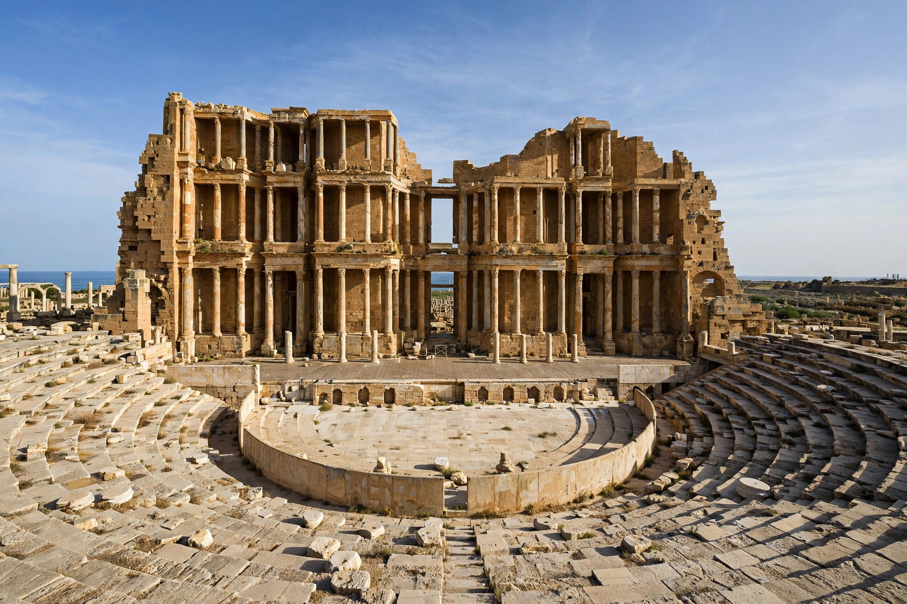

From Wikipedia, the free encyclopedia
| Roman Libya | |
|---|---|
 | |
| Region | Coast of modern Libya |
| Provinces | Creta et Cyrenaica; Africa Proconsularis (later Numidia/Africa) |
| Key cities | Leptis Magna, Sabratha, Oea, Cyrene, Ptolemais |
Roman Libya refers to the coastal territory of present-day Libya as it was under Roman rule, from the 1st century BC until the Arab conquests of the 7th century AD. The region was divided between two administrative spheres: Cyrenaica (the east), annexed as the province of Creta et Cyrenaica in 74 BC, and Tripolitania (the west), incorporated into Africa Proconsularis.
Cyrenaica came under Roman control when Ptolemy Apion bequeathed the Cyrenaic kingdom to Rome in 96 BC; Rome formally annexed it two decades later. Tripolitania, the "three cities" territory of Oea (Tripoli), Sabratha and Leptis Magna, was Phoenician and later Carthaginian before passing to Rome after the Punic Wars. Under the emperors, both regions flourished as exporters of grain, olive oil and wild beasts for the games.
Septimius Severus, born in Leptis Magna in AD 145, lavished building projects on his home town as emperor (193–211): a new forum, basilica, harbour works and a monumental arch made it one of the grandest cities of Roman Africa. Diocletian's reforms subdivided the territory into new provinces (Libya Superior and Libya Inferior in the east; Tripolitania in the west). In the 5th century the Vandals took Tripolitania; Justinian's general Belisarius recovered the coast for Byzantium in the 530s. Arab armies conquered the region in the 640s.
Roman Libya preserves some of the most spectacular classical ruins in the Mediterranean: Leptis Magna, Sabratha and Cyrene are all UNESCO World Heritage Sites. Leptis Magna's near-intact Severan architecture, buried under sand for centuries, and Cyrene's temples and necropolises rank among the finest surviving Roman sites.